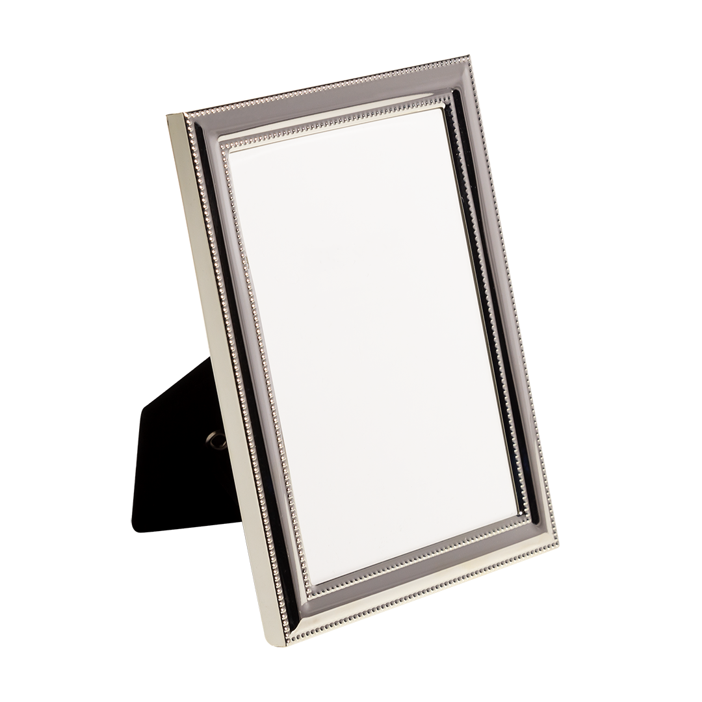
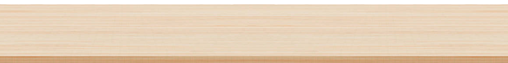

Personal Effects
Like guns and cars, cameras
are fantasy-machines whose use is addictive.
—Susan Sontag
I place a photograph of my uncle on my computer desktop, which means I learn to ignore it.
I write him daily
And so I learn to ignore him.

